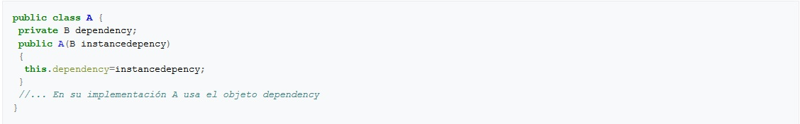
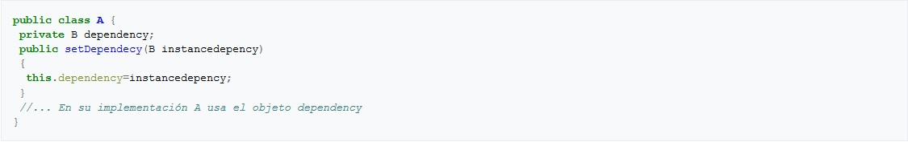
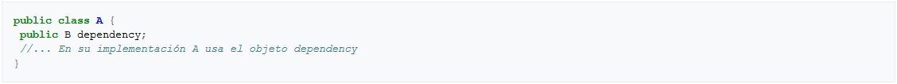
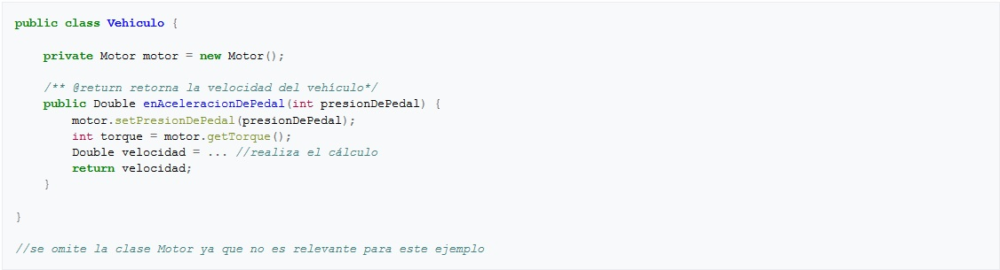
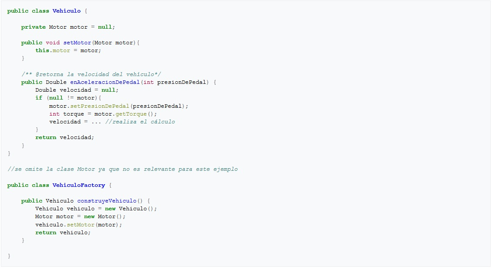

En informática, inyección de dependencias (en inglés Dependency Injection, DI) es un patrón de diseño orientado a objetos, en el que se suministran objetos a una clase en lugar de ser la propia clase la que cree dichos objetos. Esos objetos cumplen contratos que necesitan nuestras clases para poder funcionar (de ahí el concepto de dependencia). Nuestras clases no crean los objetos que necesitan, sino que se los suministra otra clase 'contenedora' que inyectará la implementación deseada a nuestro contrato.1
El término fue acuñado por primera vez por Martin Fowler.
En los comienzos de la programación, los programas eran lineales y monolíticos. El flujo de ejecución era simple y predecible, ejecutándose línea tras línea. Aparecieron dos conceptos para estructurar el código: la modularidad y la reutilización de los componentes: se crean bibliotecas de componentes reutilizables. El flujo se complica, saltando de componente a componente, y aparece un nuevo problema: la dependencia (acoplamiento) entre los componentes. El problema se empieza a considerar lo suficientemente importante como para definir nuevos conceptos en el diseño como la Inversión de Control (IoC) implementada a través de Inyección de Dependencias o de eventos.
Implementación del patrón en Java
El contenedor
La forma habitual de implementar este patrón es mediante un "Contenedor DI", también llamado "Contenedor IoC" y objetos planos o simples por ejemplo los llamados POJO en Java. El contenedor inyecta a cada objeto los objetos necesarios según las relaciones de dependencia registradas en la configuración previa.
Típicamente este contenedor es implementado por un framework externo a la aplicación (como Spring entre otros), por lo cual en la aplicación también se utilizará inversión de control al ser el contenedor (almacenado en una biblioteca) quien invoque el código de la aplicación.
Declaración de la inyección
La inyección de dependencias puede realizarse referenciando a las clases de dichas dependencias. Sin embargo, esa no es una buena práctica dado que sus componentes tienen una fuerte relación entre sí, que al final nos supondrá un inconveniente para el mantenimiento del software. Por eso, en la inyección de independencias, normalmente, se usan interfaces. De esta forma conseguimos abstraer la relación entre una clase A que depende de una clase B sin importar la implementación de cada uno de los dos. De esta forma, conseguimos desacoplamiento.
Formas de inyectar las dependencias
En java, y en general en los distintos lenguajes hay distintas formas de inyectar dependencias.2Esto se puede lograr de forma manual o mediante frameworks como Spring, para lograr esta versatilidad, la inyección de dependencias se apoya en la programación orientada a interfaces.
Usando el constructor del objeto. Por ejemplo si una clase A tiene la dependencia de un objeto con el interfaz B 
Usando un método, típicamente el método suelen ser un setter. 
Usando una variable de instancia o propiedad. 
El siguiente ejemplo muestra una implementación sin inyección de dependencias.

La implementación de arriba necesita crear una instancia de Motor para calcular su velocidad. El siguiente ejemplo sencillo muestra una implementación realizando inyección de dependencias usando un método setter.

En este ejemplo VehiculoFactory representa al proveedor. Es una aplicación sencilla del patrón de diseño factory que hace posible que la clase Vehículo no requiera saber cómo obtener un motor por sí misma, sino que es la responsabilidad de VehiculoFactory.